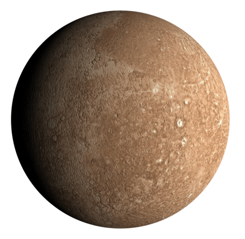
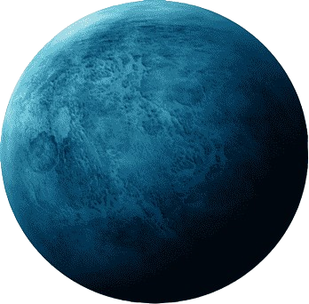
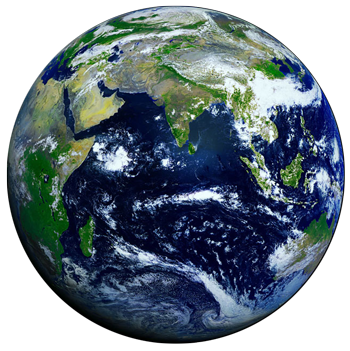
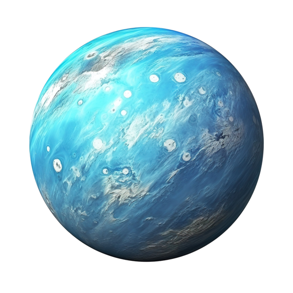
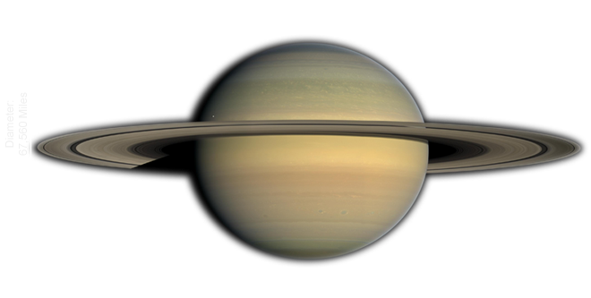

Solar System
Analaysis
The right platform to learn about planatory including basics..JOIN US!!!
The right platform to learn about planatory including basics..JOIN US!!!
Solar Syastem
Overview
Our solar system has one star, eight planets, five officially recognized dwarf planets, at least 290 moons, more than 1.3 million asteroids, and about 3,900 comets. It is located in an outer spiral arm of the Milky Way galaxy called the Orion Arm, or Orion Spur. Our solar system orbits the center of the galaxy at about 515,000 mph (828,000 kph). It takes about 230 million years to complete one orbit around the galactic center. We call it the solar system because it is made up of our star, the Sun, and everything bound to it by gravity – the planets Mercury, Venus, Earth, Mars, Jupiter, Saturn, Uranus, and Neptune; dwarf planets Pluto, Ceres, Makemake, Haumea, and Eris – along with hundreds of moons; and millions of asteroids, comets, and meteoroids. Our solar system is the only one we know of that has a planet that supports life. So far, we only know of life on Earth, but we’re looking for life on other worlds.
THE SUN

Our Sun is a 4.5 billion-year-old yellow dwarf star – a hot glowing ball of hydrogen and helium – at the center of our solar system. It’s about 93 million miles (150 million kilometers) from Earth and it’s our solar system’s only star. Without the Sun’s energy, life as we know it could not exist on our home planet.
MERCURY

Mercury is the first planet from the Sun and the smallest in the Solar System. It is a terrestrial planet with a heavily cratered surface due to overlapping impact events. These features are well preserved since the planet has no geological activity and an extremely tenuous atmosphere called an exosphere. Despite being the smallest planet in the Solar System with a mean diameter of 4,880 km (3,030 mi), 38% of that of Earth, Mercury is dense enough to have roughly the same surface gravity as Mars. Mercury has a dynamic magnetic field with a strength about 1% of that of Earth's and has no natural satellites.
JUPITER

Jupiter is the fifth planet from the Sun and the largest in the Solar System. It is a gas giant with a mass more than two and a half times that of all the other planets in the Solar System combined, and slightly less than one one-thousandth the mass of the Sun. Jupiter orbits the Sun at a distance of 5.20 AU (778.5 Gm) with an orbital period of 11.86 years. Jupiter is the third brightest natural object in the Earth's night sky after the Moon and Venus, and it has been observed since prehistoric times. It was named after Jupiter, the chief deity of ancient Roman religion.
MARS

Mars is the fourth planet and the furthest terrestrial planet from the Sun. The reddish color of its surface is due to finely grained iron(III) oxide dust in the soil, giving it the nickname "the Red Planet".[21][22] Mars's radius is second smallest among the planets in the Solar System at 3,389.5 km (2,106 mi). The Martian dichotomy is visible on the surface: on average, the terrain on Mars's northern hemisphere is flatter and lower than its southern hemisphere. Mars has a thin atmosphere made primarily of carbon dioxide, and two irregularly shaped natural satellites, Phobos and Deimos.
URANUS

Uranus is the seventh planet from the Sun. It is a gaseous cyan-coloured ice giant. Most of the planet is made of water, ammonia, and methane in a supercritical phase of matter, which in astronomy is called 'ice' or volatiles. The planet's atmosphere has a complex layered cloud structure and has the lowest minimum temperature of 49 K (−224 °C; −371 °F) out of all the Solar System's planets. It has a marked axial tilt of 97.8° with a retrograde rotation rate of 17 hours. This means that in an 84-Earth-year orbital period around the Sun, its poles get around 42 years of continuous sunlight, followed by 42 years of continuous darkness
EARTH

Earth is the third planet from the Sun and the only astronomical object known to harbor life. This is enabled by Earth being a water world, the only one in the Solar System sustaining liquid surface water. Almost all of Earth's water is contained in its global ocean, covering 70.8% of Earth's crust. The remaining 29.2% of Earth's crust is land, most of which is located in the form of continental landmasses within one hemisphere, Earth's land hemisphere. Most of Earth's land is somewhat humid and covered by vegetation, while large sheets of ice at Earth's polar deserts retain more water than Earth's groundwater, lakes, rivers and atmospheric water combined. Earth's crust consists of slowly moving tectonic plates, which interact to produce mountain ranges, volcanoes, and earthquakes. Earth has a liquid outer core that generates a magnetosphere capable of deflecting most of the destructive solar winds and cosmic radiation.
NEPTUNE

Neptune is the eighth and farthest planet from the Sun. It is the fourth-largest planet in the Solar System by diameter, the third-most-massive planet, and the densest giant planet. It is 17 times the mass of Earth, and slightly more massive than its near-twin Uranus. Neptune is denser and physically smaller than Uranus because its greater mass causes more gravitational compression of its atmosphere. Being composed primarily of gases and liquids, it has no well-defined solid surface. The planet orbits the Sun once every 164.8 years at an orbital distance of 30.1 astronomical units (4.5 billion kilometres; 2.8 billion miles). It is named after the Roman god of the sea and has the astronomical symbol ♆, representing Neptune's trident.
SATURN

Saturn is the sixth planet from the Sun and the second-largest in the Solar System, after Jupiter. It is a gas giant with an average radius of about nine-and-a-half times that of Earth.[26][27] It has only one-eighth the average density of Earth, but is over 95 times more massive.[28][29][30] Saturn's interior is thought to be composed of a rocky core, surrounded by a deep layer of metallic hydrogen, an intermediate layer of liquid hydrogen and liquid helium, and finally, a gaseous outer layer. Saturn has a pale yellow hue due to ammonia crystals in its upper atmosphere. An electrical current within the metallic hydrogen layer is thought to give rise to Saturn's planetary magnetic field, which is weaker than Earth's, but which has a magnetic moment 580 times that of Earth due to Saturn's larger size. Saturn's magnetic field strength is around one-twentieth of Jupiter's.[31] The outer atmosphere is generally bland and lacking in contrast, although long-lived features can appear. Wind speeds on Saturn can reach 1,800 kilometres per hour (1,100 miles per hour).
VENUS

Venus is the second planet from the Sun. It is a rocky planet with the densest atmosphere of all the rocky bodies in the Solar System, and the only one with a mass and size that is close to that of its orbital neighbour Earth. Orbiting inferiorly (inside of Earth's orbit), it appears in Earth's sky always close to the Sun, as either a "morning star" or an "evening star". While this is also true for Mercury, Venus appears much more prominently, since it is the third brightest object in Earth's sky after the Moon and the Sun,[20][21] appearing brighter than any other star-like classical planet or any fixed star. With such prominence in Earth's sky, Venus has historically been a common and important object for humans, in both their cultures and astronomy.